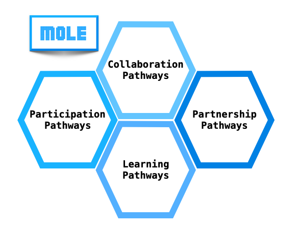

Sign in with GitHub
GitHub authentication will allow the MOLE OSE to track
your personalized learning pathways, participation in
the OSE, feedback, and user support.
PATHWAY 1
Learning Pathway
Learn how to install, understand, and use the MOLE library
through documentation, examples, and structured lessons.
- Getting started with MOLE
- Understanding mimetic operators
- Working with examples
- Solving PDE problems
PATHWAY 2
Participation Pathway
Learn how to participate in the MOLE open-source ecosystem
through documentation, testing, examples, and contributions.
- Understanding the MOLE community
- Contributing documentation
- Submitting issues and pull requests
- Improving examples and tests
Progressive Learning Levels
Beginner
Installation, basic concepts, and introductory examples.
Advanced
Research problems, contributions, and advanced development.